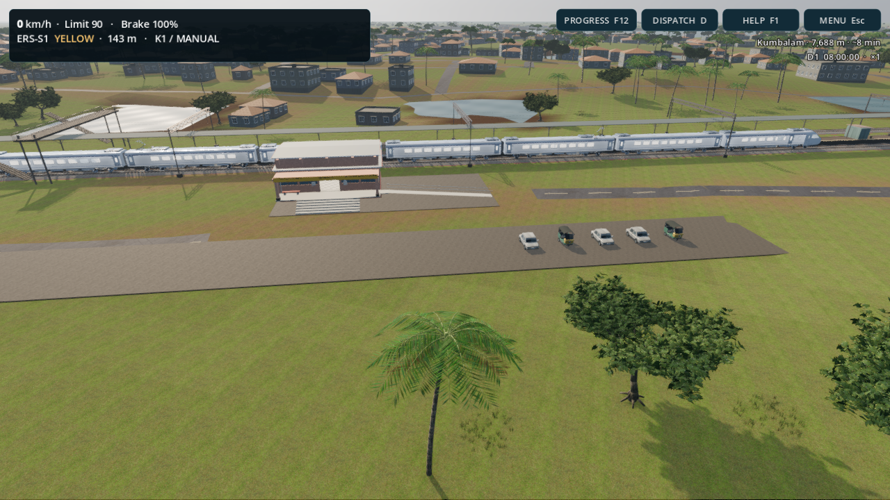
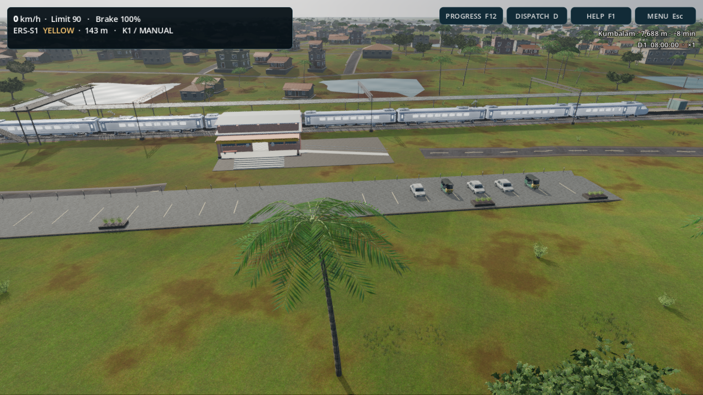
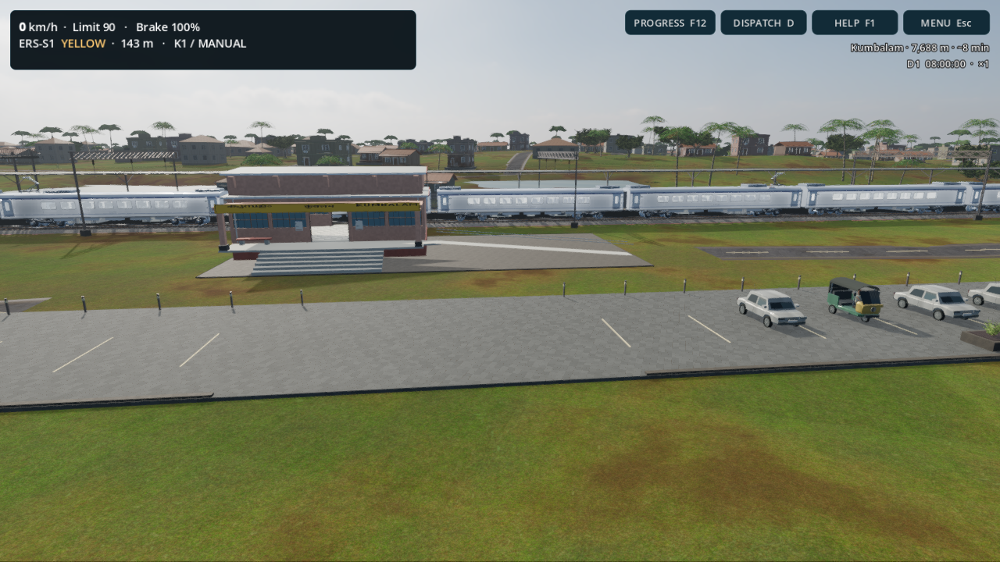
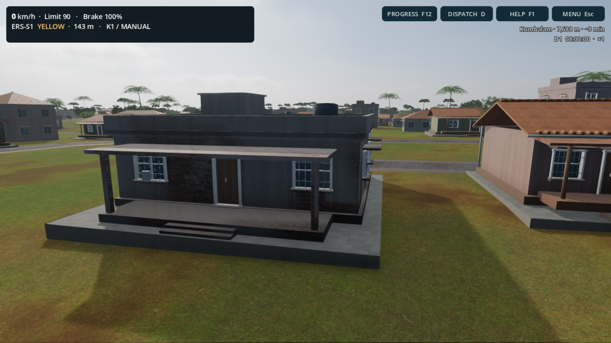

R16 adds fitted detailed houses, a new bungalow, varied vegetation and terrain, road shoulders, weathered station finishes and forecourt detail. The images below are unaltered Godot screenshots from the same paused seed, cameras and graphics settings.


Radeon 780M on the development PC; these are not RTX 4090 measurements. Forward+, 1280 × 720, VSync off, unchanged 8× MSAA + FXAA, 8K shadows and SSAO/SSIL. Tiles settled, 45 warmup frames then 120 measured frames per view. Short controlled samples; route-wide and long-duration performance will vary.
| View | Before | R16 | Frame-time change |
|---|---|---|---|
| kumbalam | 33.88 ms | 35.96 ms | +6.1% |
| pilot | 42.54 ms | 43.92 ms | +3.2% |
| passenger | 44.14 ms | 44.63 ms | +1.1% |


The route remains a reconstruction with modular architecture and procedural vegetation. This pass improves detail and surface quality; it does not make every location photogrammetric or faithfully model every real house.